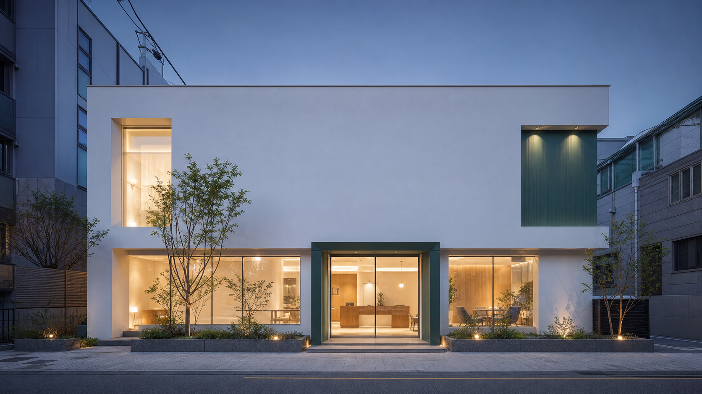

만족 그 이상의 감동

지금까지 경험해 보지 못한
감동적인 진료 경험을 선사합니다
REAL TREATMENT JOURNEY
치료 여정을 그대로 담은 증례
이미지를 좌우로 움직여 치료 전후를 비교하고,
카드를 넘겨 서로 다른 치료 여정을 살펴보세요.
* 현재 증례 이미지와 문구는 레이아웃 확인을 위한 목업 데이터입니다.
WORDS FROM PATIENTS
진료 뒤에 남은 마음
화려한 약속보다 환자가 직접 느낀
진료 과정의 차이를 먼저 보여드립니다.
믿고 갈 수 있는 곳인지
직접 판단해 주세요.
- 1. 실력이 있는지
- 2. 아프진 않을지
- 3. 불친절하지는 않을지
- 4. 필요한 장비들은 있는지
- 5. 정직하게 진료하는지
1. 실력이 있는지

한 사람의 판단에만 기대지 않습니다
- 분야별 의료진이 함께 검토하는 치료 계획
- 정기적인 증례 회의와 단계별 기록
- 진단부터 사후 관리까지 이어지는 담당 의료진
2. 아프진 않을지

통증을 줄이는 과정도 치료의 일부입니다
- 스프레이·표면 마취 후 단계적으로 진행
- 치료 중 멈출 수 있는 신호를 먼저 약속
- 시술 뒤 불편을 줄이는 관리 방법 안내
3. 불친절하지는 않을지
질문이 끝날 때까지 설명합니다
- 처음 내원한 분도 이해할 수 있는 쉬운 설명
- 치료 시간과 비용, 대안을 한 자리에서 안내
- 결정을 재촉하지 않는 충분한 상담 시간
4. 필요한 장비들은 있는지

필요한 순간에 바로 확인할 수 있도록
- 디지털 진단 장비와 원내 기공 시스템
- 치료 단계에 맞춘 장비와 재료 준비
- 기구별 멸균·소독 과정을 분리해 관리
5. 정직하게 진료하는지

보이는 자료를 기준으로 선택하게 합니다
- 진단 이미지를 환자와 같은 화면에서 확인
- 꼭 필요한 치료와 선택 가능한 치료를 구분
- 치료 범위와 비용을 시작 전에 분명하게 안내
건강한 미소를 지키는 사람들
한 명의 목소리로 설명하고,
여러 분야의 시선으로 함께 판단합니다.
대표원장 · 통합치의학과
김감동
설명부터 치료 이후까지, 환자분이 납득할 수 있는 진료를 하겠습니다.
FOR A BETTER VISIT
감동이 일상이 되도록
진료실 안팎의 작은 불편까지
운영의 기준으로 바꿨습니다.
365주말과 공휴일까지
365일 진료
필요한 날 치료를 미루지 않도록 진료 시간을 넓혔습니다.
22:00평일 매일 야간 진료
퇴근 뒤에도 여유 있게 방문할 수 있습니다.
LAB대형 원내 기공소
진료와 기공의 거리를 줄여 더 세밀하게 조율합니다.
SAFE철저한 멸균 관리
동선과 기구 단계별 관리 원칙을 지킵니다.
다양한 디지털 장비
VISIT US
처음 오시는 길부터
편안하게
서울특별시 ○○구 ○○로 365, 감동빌딩 2–5층
○○역 3번 출구에서 도보 3분
전화로 문의하기평일09:30 — 22:00
주말·공휴일09:30 — 18:00
점심시간13:00 — 14:00
365일 진료 · 요일별 의료진 일정은 문의해 주세요.